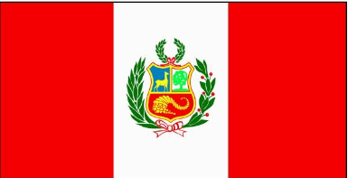

About Me
My name Spencer Spencer. I am from Peru and living in Taiwan. I am currently learning mandarin here. I like to eat and watch movies
Lima - Peru

Peru, country in western South America. Except for the Lake Titicaca basin in the southeast, its borders lie in sparsely populated zones. The boundaries with Colombia to the northeast and Brazil to the east traverse lower ranges or tropical forests, whereas the borders with Bolivia to the southeast, Chile to the south, and Ecuador to the northwest run across the high Andes.